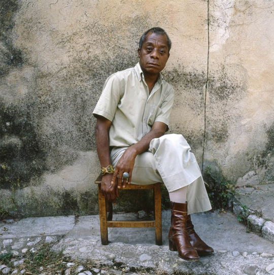

“You write in order to change the world, knowing perfectly well that you probably can’t. But the world changes according to the way people see it, and if you alter, even but a millimeter the way people look at reality, then you can change it.”
